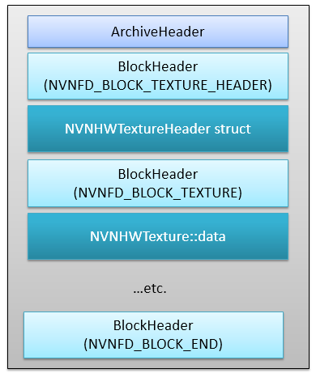

1. Overview
The NVN texture packager is an offline tool that allows users to convert texture images into a hardware dependent format. The tool is designed to be easily extended, to allow users the freedom to create their own conversion tools.
The NX GPU fetches textures from a block-linear layout, improving cache locality. Textures are swizzled into blocks, somewhat similar to compressed format blocks. In order to convert from a pitch-linear image to a texture using the NVN driver API, the pitch-linear image must be stored in a NVNBuffer, nvnTextureWriteTexels or nvnCommandBufferCopyBufferToTexture must be used to blit into the texture using the GPU. NX hardware can directly use the textures swizzled by the NVN Texture Packager without using nvnTextureWriteTexels or nvnCommandBufferCopyBufferToTexture to write into the texture, saving GPU cycles and avoiding syncpoint waiting. This may help significantly reduce loading times or help with streaming.
Texture processor is roughly divided into 3 parts: The image format loader, which manages loading of DDS / TGA files, the NVN image library, which manages operations such as format conversion and mipmap generation on generic pitch-linear images, and a hardware dependent texture converter.
The texture packager tool is targeted at Windows platforms. It comes with support for DDS and TGA texture file formats, with support to easily add other formats. The tool is available as either a dynamic library (DLL) or a command line executable.
High level diagram:
2. NVN Image Library (NvnImage.dll)
The image library is not hardware- or API-specific, and it manages operations on generic pitch-linear images. The image library is provided as an independent library.
For format conversions that are lossy, Floyd-Steinberg dithering is supported. For mipmap generation, only box filter is supported.
NVN Image Library Interface:
Code example to load the DLL entry points:
Code example to create an nvnImage:
auto img = nvnImageLib.createRawImage();
uint32_t *px = (uint32_t *)img->GetData();
nvnImageLib.releaseRawImage(img);
3. Texture Packager Core Library (NvnTexpkg.dll)
The texture packager core library contains the the NVN Image Library along with helper classes for file input / output, and conversion to hardware texture formats.
An NX formatted texture built with the texture packager may be used on Windows NVN via the nvnTextureBuilderSetPackagedTextureData method. Setting this will re-swizzle the NX-optimized texture into the native Windows GPU optimized format before downloading the texture into GPU memory, when nvnTextureInitialize is called.
Texture Packager Core Library Interface:
Code example to load the DLL entry points:
Code example to export to a NVNHWTexture:
auto hwexporter = tpkgLib.createRawImageHardwareTextureExporter(&nvnImageLib);
auto hwtex = make_unique<NVNHWTexture>();
hwexporter->Convert(img, hwtex.get());
4. Using Hardware Format Textures In NVN
NX NVN Example code:
memPool = device.CreateMemoryPool(data, sz, nvn::MemoryPoolType::GPU_ONLY);
TextureBuilder textureBuilder = device.CreateTextureBuilder();
textureBuilder.SetTarget(tex->header.target)
.SetFormat(tex->header.format)
.SetLevels(tex->header.mipmapLevels)
.SetSize3D(tex->header.width, tex->header.height, tex->header.depth)
.SetPackagedTextureData(tex->data);
texture = textureBuilder.CreateTextureFromPool(memPool, texDataOffsetInMemPool);
Note that we avoid having to use nvnCommandBufferCopyBufferToTexture() here, and instead can directly use the image. nvnTextureWriteTexels() provides similar CPU swizzling functionality online.
5. Supported Formats
Supported conversion destination formats:
1 r8, r8sn, r8ui, r8i, r16f, r16, r16sn, r16ui, r16i, r32f, r32ui, r32i, rg8,
2 rg8sn, rg8ui, rg8i, rg16f, rg16, rg16sn, rg16ui, rg16i, rg32f, rg32ui, rg32i,
3 rgb8, rgb8sn, rgb8ui, rgb8i, rgb32f, rgb32ui, rgb32i, rgba8, rgba8sn, rgba8ui,
4 rgba8i, rgba16f, rgba16, rgba16sn, rgba16ui, rgba16i, rgba32f, rgba32ui,
5 rgba32i, rgbx8_srgb, rgba8_srgb, rgba4, rgb5, rgb5a1, rgb565, rgb10a2,
6 rgb10a2ui, r11g11b10f, rgb9e5f, rgbx8, rgbx8sn, rgbx8ui, rgbx8i, rgbx16f,
7 rgbx16, rgbx16sn, rgbx16ui, rgbx16i, rgbx32f, rgbx32ui, rgbx32i
Supported TGA loading formats (conversion supported):
1 32-bit, 24-bit, 16-bit, 8-bit and RLE TGA formats.
Supported DDS loading formats (conversion supported):
1 r16f, r32f, a2bgr10, a2rgb10, abgr16f, abgr32f, abgr8, argb8, gr16, gr16f,
2 gr32f, rgb565, rgb5a1, rgb8, rgba4, xbgr8, xrgb8, xrgb1555, xrgb4
Supported source DDS formats (passthrough only, no conversion):
10 bc6h_uf16 --> bptc_ufloat
11 bc6h_sf16 --> bptc_sfloat
13 bc7_srgb --> bptc_unorm_srgb
14 astc_4x4 --> rgba_astc_4x4 or rgba_astc_4x4_srgb
15 astc_5x4 --> rgba_astc_5x4 or rgba_astc_5x4_srgb
16 astc_5x5 --> rgba_astc_5x5 or rgba_astc_5x5_srgb
17 astc_6x5 --> rgba_astc_6x5 or rgba_astc_6x5_srgb
18 astc_6x6 --> rgba_astc_6x6 or rgba_astc_6x6_srgb
19 astc_8x5 --> rgba_astc_8x5 or rgba_astc_8x5_srgb
20 astc_8x6 --> rgba_astc_8x6 or rgba_astc_8x6_srgb
21 astc_8x8 --> rgba_astc_8x8 or rgba_astc_8x8_srgb
22 astc_10x5 --> rgba_astc_10x5 or rgba_astc_10x5_srgb
23 astc_10x6 --> rgba_astc_10x6 or rgba_astc_10x6_srgb
24 astc_10x8 --> rgba_astc_10x8 or rgba_astc_10x8_srgb
25 astc_10x10 --> rgba_astc_10x10 or rgba_astc_10x10_srgb
26 astc_12x10 --> rgba_astc_12x10 or rgba_astc_12x10_srgb
27 astc_12x12 --> rgba_astc_12x12 or rgba_astc_12x12_srgb
ASTC formats are available through the DDS container format. ASTC is stored as a DDS10 extended format. NVASTC was used to generate ASTC formats DDS images for testing; see https://developer.nvidia.com/content/astc-compression-gets-cuda-boost.
6. XTX format
The XTX format is a minimalistic storage container format for packaged textures. Using this XTX format is entirely optional; developers are free to write out the data in the fully visible HWTexture structures using their own file format of choice. The XTX format is simple; a ArchiveHeader object is stored at the start of the archive, followed by a list of BlockHeader structures. The BlockHeader structures are stored in pairs of NVNFD_BLOCK_TEXTURE_HEADER and NVNFD_BLOCK_TEXTURE blocks; one NVNFD_BLOCK_TEXTURE_HEADER followed by the corresponding NVNFD_BLOCK_TEXTURE block. NVNFD_BLOCK_TEXTURE_HEADER block contains a NVNHWTextureHeader structure and a NVNFD_BLOCK_TEXTURE contains the data block in NVNHWTexture::data. A NVNFD_BLOCK_END block marks the end of the archive.
Note: in the command line tool, the NTX extension is still available for legacy compatibility. NTX and XTX containers create the same file except for the extension. Support for NTX will be removed in a future update.
See nvnTool_Fd.h.

7. Command Line Tool (NvnTexpkg.exe)
The executable version of the texture packager is a simple command line app uses the library, writing the resulting hardware format textures to an xtx archive.
Command line arguments:
1 Usage: NvnTexpkg.exe [OPTION]... [-i srcfile] [-o dstfile]
3 Example command line params (to .xtx):
4 NvnTexpkg.exe -i texture1.dds -i texture2.dds -o out.xtx --stitch
5 --mip-filter box --minmip 1 -f rgba8
7 -i <SrcFile> : Source image file. This can appear more than once on the
8 command line for texture arrays or when creating multiple
9 textures in one xtx file. Maximum source file count is 1024.
10 Supported file formats: dds, tga
11 -o <DstFile> : Destination texture binary file (default: out.xtx)
12 Supported file formats: xtx, ntx, raw
13 --append : Append textures to existing xtx archive file. Ignored when
14 not writing to xtx format.
15 --src-format <SrcFmt> : Reinterpret source texture as given format (default:
16 if not specified, the source format is based on the src
17 texture contents, and no reinterpretation happens)
18 Note: the reinterpret format and the texture source format
19 must have the same bits-per-pixel.
20 --dst-format <DstFmt> : Destination texture format (default: if not specified,
21 a destination format is chosen based on the source format)
22 -f <DstFmt> : Same as --dst-format <DstFmt> above.
23 --reinterpret <SFmt> : Same as --src-format <SFmt> above.
24 --dither : Enable dithering on format conversion.
25 --mip-filter <mode> : Mip filter for generating mips (only "box" supported now)
26 --minmip <N> : Minimum mipmap size (ie, generate until dimensions <= NxN)
27 --stitch : Creates a texture array from the source textures.
28 Source textures should have the same dimensions.
29 --minimal-layout : Enable minimal layout storage mode.
30 --assemble : Creates mips from the source textures. The order of the
31 source textures on the command line should be the desired
32 order of the mip levels: src_1 = lvl_0, src_2 = lvl_1, etc.
33 Note: This option cannot be used with -stitch.
34 --printinfo : Print out useful information about the resulting textures.
35 --supported : List supported output texture formats.
36 -? : Show this usage message.
8. Limitations
- Convertion to / from compressed image formats is not supported.
- No support for DDS10 texture formats (except ASTC).
- Multisample and Buffer texture targets are not supported.